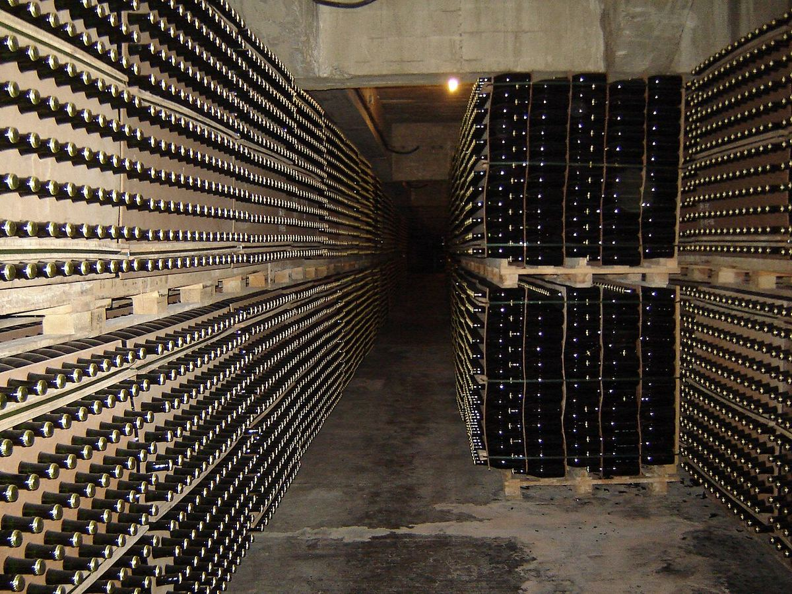

ESPUMOSO
Una de las casas más antiguas y emblemáticas del Cava, en Sant Sadurní d'Anoia, ligada a los primeros espumosos de método tradicional elaborados en España y a unas bodegas modernistas declaradas monumento.

La familia vinculada a Codorníu documenta su actividad vitícola en Sant Sadurní d'Anoia desde el siglo XVI. El nombre procede de la familia Codorníu, cuya heredera, Anna de Codorníu, se casó en el siglo XVII con Miquel Raventós, y desde entonces la casa quedó unida al apellido Raventós.
En la década de 1870, Josep Raventós elaboró en Codorníu los primeros espumosos de método tradicional —con segunda fermentación en botella— a partir de las variedades autóctonas del Penedès: macabeo, xarel·lo y parellada. Aquel paso está considerado uno de los puntos de partida de la industria del cava, que convirtió a Sant Sadurní en su capital.
Las bodegas de Codorníu, proyectadas por el arquitecto modernista Josep Puig i Cadafalch a finales del siglo XIX y comienzos del XX, fueron declaradas Monumento Histórico-Artístico. Bajo ellas se extienden kilómetros de galerías subterráneas donde reposan las botellas durante su crianza.
La gama abarca cavas de gran difusión y otros de mayor crianza. Anna de Codorníu, que rinde homenaje a la antigua heredera de la familia, fue de los primeros cavas en incorporar chardonnay. La casa también elabora cavas de paraje calificado y forma parte de un grupo con bodegas en otras denominaciones.
Las cavas históricas de Sant Sadurní d'Anoia pueden visitarse con recorridos guiados por las bodegas y sus galerías subterráneas, que suelen terminar con una cata.